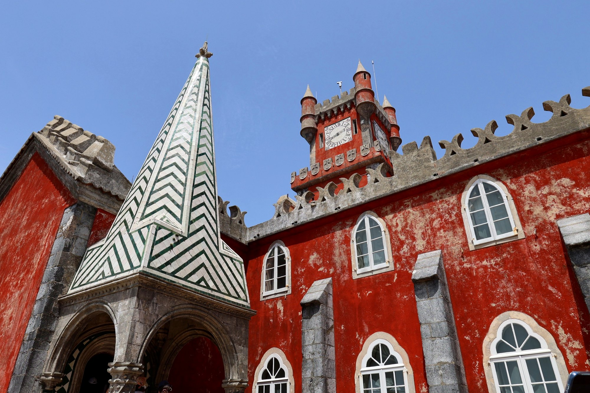
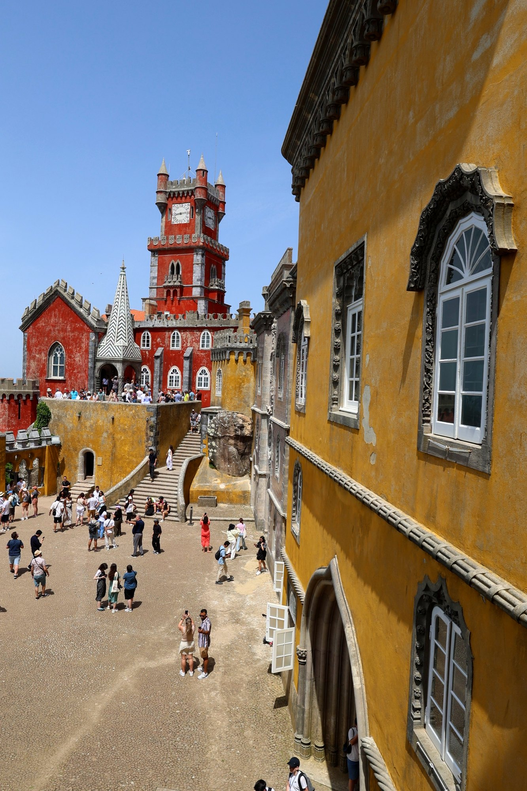
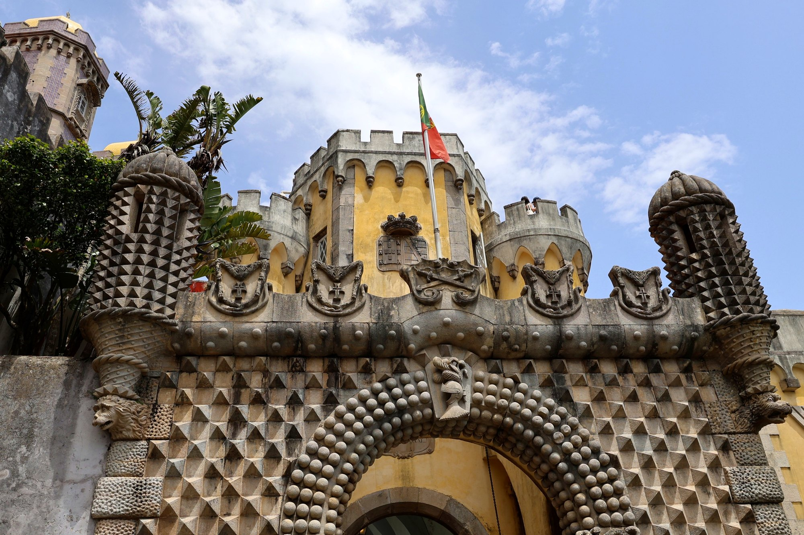
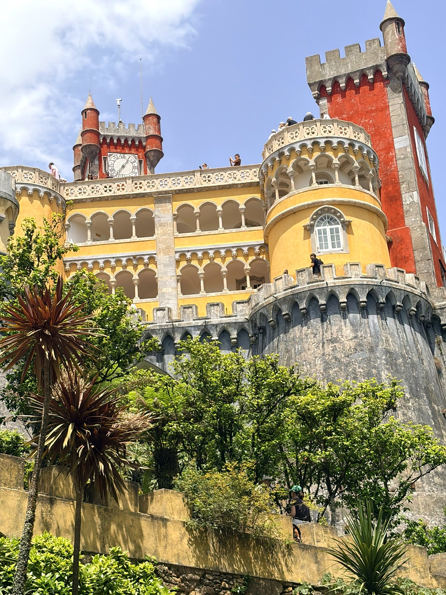

Le palais de Pena, le château romantique de Ferdinand II à Sintra
Au sommet de la Serra de Sintra, un roi venu d'Allemagne a transformé un monastère en ruines en palais jaune et rouge. Histoire d'un rêve d'architecte devenu l'un des monuments les plus visités du pays.

On le voit d'en bas, depuis la vieille ville de Sintra, quand la brume se lève : une tache jaune et rouge posée sur la crête, à près de cinq cents mètres d'altitude, au milieu d'une forêt très dense. De loin, on a du mal à croire qu'il s'agit d'un vrai bâtiment. De près, on n'en est pas beaucoup plus sûr. Le palais de Pena accumule les tours crénelées, les coupoles, les arcades mauresques, les fenêtres manuélines et les murs d'azulejos avec une liberté que peu d'architectes se seraient permise. C'est qu'il a été imaginé par un roi qui se voulait d'abord artiste.
Un monastère au sommet de la montagne
Avant le palais, il y avait une chapelle. Dès le Moyen Âge, un petit sanctuaire dédié à Nossa Senhora da Pena occupe le sommet rocheux, au-dessus de Sintra. Au début du XVIe siècle, le roi Manuel Ier, grand bâtisseur et grand dévot, le fait reconstruire et le confie aux moines de l'ordre de Saint-Jérôme, les mêmes qui veillaient à Belém sur le monastère des Hiéronymites. Une petite communauté s'y installe, à l'écart du monde, dans un couvent modeste.
Le XVIIIe siècle lui est fatal. La foudre frappe le monastère, puis le tremblement de terre de 1755 achève de le ruiner. Seule la chapelle s'en sort à peu près intacte, avec son retable d'albâtre et de marbre sculpté au XVIe siècle par Nicolau Chanterene. En 1834, la suppression des ordres religieux au Portugal vide définitivement les lieux. Il ne reste plus, sur la montagne, qu'un couvent en ruine que plus personne n'entretient.
Ferdinand II, le roi-artiste
Ferdinand de Saxe-Cobourg-Gotha arrive à Lisbonne en 1836 pour épouser la reine Maria II. Il n'a pas vingt ans. Cousin germain du prince Albert, le futur époux de la reine Victoria, il est né à Vienne et a été élevé dans un monde germanique qui se passionne alors pour les châteaux médiévaux, les ruines et les légendes. La naissance de leur premier fils, en 1837, lui vaut le titre de roi. Il le portera sous le nom de Fernando II.
Le pouvoir l'intéresse peu. Il dessine, grave, collectionne, protège les monuments anciens. Les Portugais finiront par l'appeler o Rei-Artista, le roi-artiste. En 1838, il achète aux enchères les ruines du monastère de Pena, puis le château des Maures voisin et les terres qui les entourent. Il a trouvé son grand projet.
Pour le mener à bien, il fait appel au baron Wilhelm Ludwig von Eschwege, un ingénieur des mines allemand qui a longtemps travaillé au Brésil et pratique l'architecture en amateur. Les travaux commencent en 1842. Le roi et la reine suivent le chantier de près, corrigent les plans, imposent des ornements. L'ancien monastère est restauré et conservé ; à côté, on construit un palais neuf. La tour de l'horloge est terminée dès 1843, et l'essentiel de l'ensemble est achevé au milieu des années 1850. La décoration intérieure, elle, se poursuivra pendant des années encore.

Un palais qui ne choisit pas
Le résultat ne ressemble à rien de connu. Pena emprunte au gothique, à la Renaissance, à l'architecture mauresque, au manuélin portugais, aux châteaux rhénans que Ferdinand avait vus enfant. Les historiens de l'art le rangent parmi les premières grandes réalisations du romantisme architectural en Europe, plus de vingt-cinq ans avant le Neuschwanstein de Louis II de Bavière, auquel on le compare souvent.
Le plan se lit encore dans les couleurs. Le rouge habille l'ancien monastère, avec sa tour de l'horloge, sa chapelle et son cloître manuélin couvert d'azulejos du XVIe siècle. L'ocre jaune signale le palais neuf, avec ses arcades, ses tourelles et sa grosse tour ronde. Entre les deux, des passages, des escaliers et des terrasses où l'on circule à ciel ouvert, avec la Serra en contrebas.
L'entrée donne le ton. Le portail principal est hérissé de pointes et de sphères de pierre, flanqué de deux tourelles et surmonté des armoiries royales. Un peu plus loin, au-dessus d'une autre porte, un triton à demi homme, à demi poisson, surgit d'un coquillage et soutient la fenêtre qui le surplombe, couverte de feuillages sculptés. Le musée y voit une allégorie de la création du monde. Les visiteurs, eux, s'arrêtent surtout pour le photographier.

Des couleurs longtemps oubliées
Ceux qui ont visité Pena il y a quarante ans se souviennent d'un palais gris. Au fil du XXe siècle, les enduits colorés voulus par Ferdinand s'étaient effacés, et l'on avait fini par croire que le monument avait toujours eu cette teinte de pierre. Les campagnes de restauration menées à la fin du siècle ont retrouvé, sous la patine, le rouge et le jaune d'origine. Aujourd'hui, ces couleurs sont devenues l'image même du lieu.
À l'intérieur, le palais a gardé l'aspect qu'il avait au début du XXe siècle, quand la famille royale y séjournait encore l'été. On traverse la salle à manger et son grand surtout de table en porcelaine, des chambres étroites, des salons tendus de tissus, le cabinet où le roi Carlos peignait, une salle arabe aux murs couverts de trompe-l'œil orientaux. L'ensemble est moins solennel qu'on ne l'imagine : c'était une résidence d'été, pas un palais d'apparat.

Un parc venu du monde entier
Ferdinand ne s'est pas contenté du palais. Autour, sur une montagne alors presque nue, il fait planter un parc d'environ quatre-vingt-cinq hectares. Il y fait venir des essences du monde entier : séquoias d'Amérique du Nord, cèdres, fougères arborescentes d'Australie et de Nouvelle-Zélande, camélias. Des sentiers sinueux mènent à des lacs, à des grottes, à des belvédères. Le plus haut, la Cruz Alta, culmine à 529 mètres, au point le plus élevé de la Serra. Par temps clair, la vue porte jusqu'à l'Atlantique et, au loin, jusqu'à l'estuaire du Tage.
Dans la partie ouest du parc se cache un chalet de style alpin, construit dans les années 1860 pour Elise Hensler, une cantatrice d'origine suisse que Ferdinand, veuf depuis 1853, épouse en 1869. Le roi lui donne le titre de comtesse d'Edla. Elle a joué un rôle important dans l'aménagement des jardins et la décoration des intérieurs.
La dernière nuit d'une reine
À la mort de Ferdinand, en 1885, le palais revient à la comtesse d'Edla. L'héritage crée des tensions avec la famille royale, et l'État rachète le domaine en 1889. Le roi Carlos et la reine Amélie, née princesse d'Orléans, en font l'une de leurs résidences favorites. Amélie y passe de longs séjours et transforme l'ancien potager des moines en jardin à la française.
C'est à Pena qu'elle se trouve dans la nuit du 4 au 5 octobre 1910, quand la république est proclamée à Lisbonne. Elle quitte le palais le lendemain pour rejoindre son fils, le roi Manuel II, à Mafra, puis embarque à Ericeira pour l'exil. Elle ne reviendra au Portugal qu'une seule fois, en 1945. Le nouveau régime transforme rapidement le palais en musée national, en conservant le mobilier en place.
Le monument le plus visité de Sintra
En 1995, l'Unesco inscrit le paysage culturel de Sintra sur la liste du patrimoine mondial. En 2007, le palais de Pena est élu parmi les sept merveilles du Portugal. Il accueille désormais plusieurs centaines de milliers de visiteurs par an et c'est, de loin, le monument le plus fréquenté de Sintra. Le palais et le parc sont gérés depuis 2007 par la société publique Parques de Sintra – Monte da Lua.
Pour profiter du lieu, mieux vaut arriver à l'ouverture, réserver son billet à l'avance et éviter les week-ends d'été, quand la cour d'armes se remplit en quelques minutes. On peut monter à pied depuis le centre de Sintra par des chemins forestiers, compter environ une heure. Et il ne faut pas oublier le parc, que beaucoup de visiteurs négligent alors qu'il dit autant de son créateur que le palais lui-même.